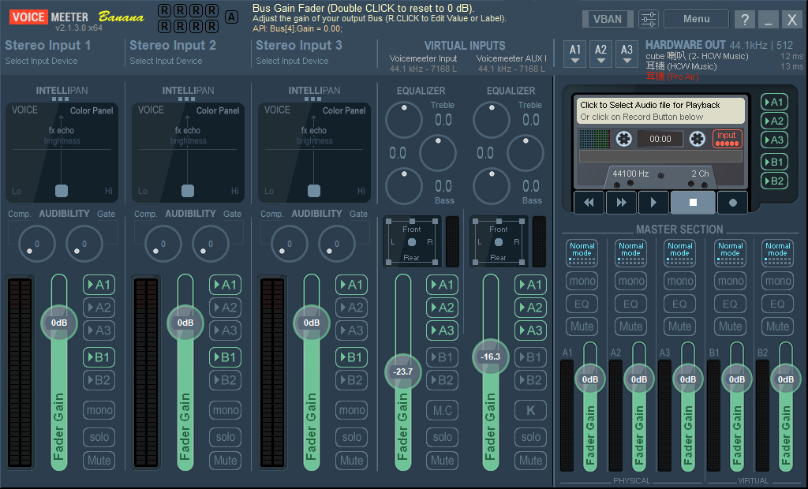
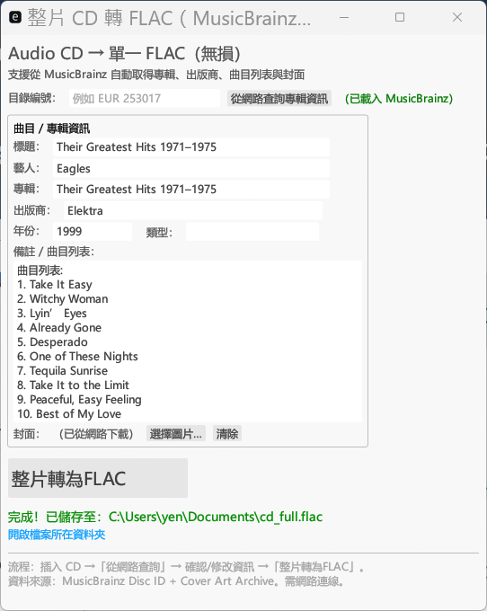

利用電腦播放 mp3 音樂，可以透過 Voicemeeter Banana 軟體，將音訊同時送到兩個藍芽喇叭。
Voicemeeter Banana 安裝後，C:\Program Files (x86)\VB\Voicemeeter\voicemeeter_x64.exe 為 standard 版，而 C:\Program Files (x86)\VB\Voicemeeter\voicemeeterpro_x64.exe 則為 pro 版。
以 voicemeeterpro_x64.exe 為例，最右上方的 Hardware Out 可透過 A1、A2 與 A3 選擇後，分別對應到電腦已經連線的實體 Speaker、藍芽喇叭、藍芽耳機或實體耳機，上方 Hardware Out 左邊的 Virtual Input 則可透過電腦的設定 - 音訊 - 輸出 選擇 Voicemeeter Input。之後所有電腦的音訊輸出都會經過 Voicemeeter Input 進行轉訊，然後再由 Voicemeeter 設定的 A1、A2 與 A3 同時播放。

類似能同時將電腦音訊播放到多個藍芽喇叭的功能，採用 Rust 製作: mp3_player_multi_output.zip
啟動 mp3_player_multi_output 後，選擇所要播放的 mp3 檔案後，將輸出裝置設為 Voicemeeter Input，按下開始播放就可以選擇由 Voicemeeter 設定的 A1、A2 與 A3 同時播放。利用自建的 mp3 播放器，可以透過虛擬音訊等化器，配合播放環境控制輸出各頻段的增益。
可選擇 mp3 或 FLAC 格式檔案，同時在多個藍芽喇叭播出: mp3_flac_player_gui.7z
將 audio cd 轉為無損 FLAC: cd2flac.7z

Copyright © All rights reserved | by Colorlib